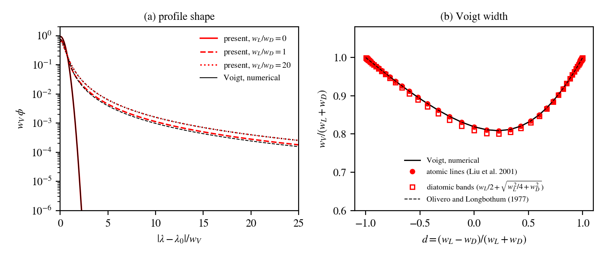

Line shapes and broadening
A bound-bound transition does not emit at one wavelength only. The emitters move (Doppler effect), the upper and lower levels have a finite lifetime (natural broadening), and the collisions with the neighbouring particles perturb the phase of the emitted wave train (pressure broadening: van der Waals, resonance, phase interruption and Stark broadening by the free electrons). The line therefore spreads over a small wavelength interval, described by a normalised line profile \(\phi(\lambda)\) [m-1],
The bound-bound classes (Atomic bound-bound lines, Diatomic band systems, line by line) compute the integrated emission \(\varepsilon\) [W m-3 sr-1] and the integrated absorption \(k\) [m-1 m] of every line; the spectral coefficients on the wavelength grid are then
where \(\phi_i\) is the profile value given to grid point \(i\). This page explains how the code builds \(\phi_i\): the widths of each broadening mechanism, how they combine into a Voigt profile, the approximation of the Voigt shape, its truncation, and its placement on the grid.
Sources: src/radiation/lineShapes (lineShapeModel,
voigtWhitingOliveroLongbothum), the width computations in
src/radiation/radiators/derived/atomicLines/atomicLines.C and
src/radiation/radiators/derived/diatomicBands/diatomicBands.C.
The classes are documented in Line-shape classes.
All widths below are full widths at half maximum (FWHM) in metres
of wavelength. A width \(\Delta\nu\) in frequency converts to
wavelength by \(\Delta\lambda = \lambda_0^2\,\Delta\nu/c\); the code
writes the factor \(\lambda_0^2/c\) once per line (cWav).
Gaussian and Lorentzian profiles
Two shapes are the building blocks.
A Gaussian of FWHM \(w_D\) describes the Doppler effect: an emitter moving with velocity component \(u\) towards the observer emits at \(\lambda_0(1 - u/c)\), and a Maxwellian distribution of \(u\) gives a Gaussian distribution of wavelengths,
\[\phi_G(\Delta\lambda) = \frac{2}{w_D}\sqrt{\frac{\ln 2}{\pi}} \exp\!\left[-4\ln 2\left(\frac{\Delta\lambda}{w_D}\right)^{2}\right].\]A Lorentzian of FWHM \(w_L\) describes the processes that limit the duration of the emitted wave train (finite lifetime, collisions). An exponentially damped wave train has the spectrum
\[\phi_L(\Delta\lambda) = \frac{1}{\pi}\, \frac{w_L/2}{\Delta\lambda^{2} + (w_L/2)^{2}} .\]The Lorentzian has wide wings, \(\phi_L \propto \Delta\lambda^{-2}\); the Gaussian falls off much faster.
The Lorentzian mechanisms below are independent of each other, so their widths add: the convolution of two Lorentzians is a Lorentzian whose width is the sum of the two widths. The Doppler and Lorentz parts act together; the resulting profile is their convolution, the Voigt profile (section The Voigt profile).
Broadening of the atomic lines
atomicLines::addEmissionAbsorption computes six widths per line and
cell. The symbols are
\(\lambda_0\) [m]: the line centre;
\(n\), \(T\), \(m\), \(r\): number density [m-3], translational temperature [K], mass [kg] and hard-sphere radius [m] of the emitting species (entries
massandradiusof the species, translational temperature of the cell state);\(n_j\), \(T_j\), \(m_j\), \(r_j\): the same for every species \(j\) of the cell state; \(n_\mathrm{tot} = \sum_j n_j\), \(\rho = \sum_j n_j m_j\);
\(n_e\), \(T_e\): electron density and temperature of the cell state;
\(A_{ul}\) [s-1], \(g_u\), \(g_l\): the Einstein coefficient and the degeneracies given with the line in the transition file; \(g(u)\), \(g(l)\) the degeneracies of the upper and lower levels; \(n_l\) the population of the lower level [m-3] from the population model (Level populations).
Note
The sums over \(j\) run over the species of the cell state, that
is over the radiating species of the case (the species
dictionary of radiationProperties). A gas component that is not
declared as a radiating species is not a perturber of the pressure
widths.
Doppler width
The FWHM of the Gaussian of a Maxwellian emitter at \(T\):
The code writes \(\ln 2\) as 0.69315.
Natural width
A level \(x\) decays radiatively at the rate \(\Gamma_x\); the line between two levels has a Lorentzian of angular-frequency FWHM \(\Gamma_u + \Gamma_l\), i.e. a frequency FWHM \((\Gamma_u + \Gamma_l)/(2\pi)\) (Laux 1993, Eq. 4.19, p. 33):
The weight \(g_u^{\text{line}}/g(x)\) handles the lumped levels of the database: when a level \(x\) groups several sublevels and a line starts from one of them only, its \(A\) counts for the share of the states of \(x\) that it leaves. \(\Gamma_x\) is thus the mean decay rate per state of the level. A ground level has \(\Gamma = 0\).
Phase-interruption (impact) width
In the impact approximation every collision of the emitter interrupts the phase of the wave train. With the collision frequency \(\nu_\mathrm{coll}\) per emitter, the line is a Lorentzian of angular half width \(\nu_\mathrm{coll}\), i.e. a frequency FWHM \(\nu_\mathrm{coll}/\pi\). The code computes the hard-sphere collision rate per unit volume
where \(\sqrt{2kT_m(m+m_j)/(\pi m m_j)}\) is half the mean relative speed \(\bar g = \sqrt{8kT_m/(\pi\mu)}\), so that \(Z/n = \sum_j n_j\,\sigma_j\,\bar g_j\) is the collision frequency per emitter. The width is
Resonance width
An emitter colliding with an atom of its own kind in the lower level of the line interacts through the resonant dipole-dipole force. The code uses the transition’s own term of Griem (1964, p. 97), as written by Laux (1993, Eq. 4.20, p. 33), with the oscillator strength expressed through \(A_{ul}\), and takes twice the half width of that formula:
Laux’s formula is a half width at half maximum (his Eq. 4.20 is printed
with the coefficient \(3e^2/(16\pi^2\varepsilon_0 m_e c^2) =
6.72\times10^{-16}\) m), hence the factor 2. \(n_l\) is the number
density of the line’s own lower level, of weight \(g_l\): when the
database lumps several levels into one level \(l\) of weight
\(g(l)\) and population \(n(l)\), the line sees the share
\(g_l/g(l)\) (until 2026-11-16 the code used \(n(l)\), which
overestimated the width of lines with a lumped lower level by
\(g(l)/g_l\)). The dsmcFoam escape factor (spontaneousEmission)
uses the same full width since 2026-11-16.
van der Waals width
Collisions with all other particles through the induced-dipole force use an empirical form, with the mean speed written as \((3kT/\bar m)^{1/2}\), \(\bar m = \rho/n_\mathrm{tot}\):
The numbers 20 and 4.5214e-18 are those of the verified version of the
code (docs/RADIATION_SPEC.md section 3.1, a PARADE-type empirical
form); the code gives no other source.
Stark width
The free electrons perturb the levels of the emitter through their electric field. For the neutral N and O lines this is the dominant pressure width in a shock layer. The code uses the electron-impact form of Johnston (2006, Eq. 3.13, p. 58): the half width at half maximum \(\Delta\lambda_{S,0}\) [Angstrom] at \(T_e = 10^4\) K and \(n_e = 10^{16}\) cm-3 is scaled as
and the full width in SI is
with \(s = \Delta\lambda_{S,0}\) (column 7 of the atomic transition
file, in Angstrom), \(n_e\) in m-3, and \(n_S\) the
entry starkExponent of the species. Since \(10^{16}\)
cm-3 = \(10^{22}\) m-3 and one Angstrom is
\(10^{-10}\) m, the factor is \(10^{-10}/10^{22} = 10^{-32}\).
Data. The values of \(s\) in
database/atoms/N_I.datandO_I.datare Johnston’s tabulated \(\Delta\lambda_{S,0}\) (Appendix A, Tables A-1 to A-4), whose primary sources are Griem (1974), Wilson and Nicolet (1967) or Johnston’s least-squares fit (Eq. 3.16, p. 59); the data file keeps the table, page and source of each value (database/SOURCES.md, entry Johnston2006). Lines without a Johnston value, and every N II and O II line, carry \(s = 0\): they have no Stark broadening.Exponent. Johnston gives \(n_S = 1/3\) for most N and O lines (Park 1982, as quoted by Johnston); the tutorials use
starkExponent 0.33. The entry is required and applies to every line of the species.Electron temperature. \(T_e\) is the electron temperature of the cell state; when the cell state gives none (\(T_e \le 0\)) the population model supplies one (
electronTemperature, the temperature of the population model, see Level populations). \(n_e = 0\) gives \(w_S = 0\).
Total Lorentz width
Lines whose upper level lies above the bound limit \(E_b\) (the lowered ionisation limit of the population model) are skipped. A species with \(n < 10\) m-3 or \(T < 10\) K contributes nothing.
Broadening of the diatomic lines
diatomicBands computes its widths once per vibrational transition
(not per rotational line), at \(\lambda_0 = 0.01/\bar\nu_0\), the
band origin (\(\bar\nu_0\) in cm-1). With
\(M = m/\mathrm{amu}\), \(n\) and \(T\) the density and
translational temperature of the radiator, the code evaluates
(diatomicBands.C; forms kept from the verified version, class
header items 11 and 12):
Width |
Expression in the code [m] |
|---|---|
Doppler |
\(w_G = 7.16\times10^{-7}\,\lambda_0\sqrt{T/M}\) (\(7.16\times10^{-7} = \sqrt{8k\ln 2/\mathrm{amu}}/c\)) |
self |
\(1.33\times10^{-29}\sqrt{2/M}\,\lambda_0^{2}\sqrt{T}\,n \times 10^{-6}\times 10\times 10^{10}\) |
foreign |
\(5.85\times10^{-30}\sqrt{1/M + 1/M_f}\,\lambda_0^{2}\sqrt{T}\,n_f \times 10^{-6}\times 10\times 10^{10}\) |
natural |
\(1.18\times10^{-14}\) (a constant) |
Stark |
\(10^{-8}\times 0.3\,(10^{-22}\max(n_e, 10^{-6}))^{0.6}\, \lambda_0^{2}\times 10^{10}\) (no \(T_e\) dependence) |
with \(p = \sum_j n_j k T_j + n_e k T_e\), \(n_f = \max(p/(kT) - n,\ 10^{-40} p/(kT))\) the foreign-gas density (\(10^{10}\) if \(p \le 10^{-16}\)), and \(M_f\) the foreign-gas molar mass. The cgs/Angstrom factors are carried verbatim. As documented in the class header (item 11), \(M_f\) is compared with its bounds in the wrong units, so it ends at 28.85 for any mixture and at 10 for a pure radiator. The Lorentz width is the sum of the four collision and radiative terms, and the Voigt width uses the simpler form
The shape, its table and its placement are those of the atomic lines (below); the table is built once per vibrational transition and shared by all its rotational lines.
The Voigt profile
The convolution of the Gaussian and the Lorentzian,
has no closed form. The code uses two empirical approximations, one for its width and one for its shape.
Voigt width (atomic lines)
With \(d = (w_L - w_D)/(w_L + w_D)\), the form of Liu et al. (2001):
The class name keeps Olivero and Longbothum (1977), whose width \(w_V = 0.5346\,w_L + \sqrt{0.2166\,w_L^{2} + w_D^{2}}\) the form above replaces; the two agree within 3e-4 (relative). Against the width of the Voigt profile computed by numerical convolution, the Liu et al. form is within 1.1e-4 over \(10^{-3} \le w_L/w_D \le 10^{3}\), and the diatomic form \(w_L/2 + \sqrt{w_L^2/4 + w_G^2}\) within 1.2e-2 (Figure 1b).
Whiting shape
With \(a = w_L/w_V\) and \(x = |\lambda - \lambda_0|/w_V\), the shape of Whiting (1968) is
The first term is a Gaussian of FWHM \(w_V\) (\(2.772 \approx 4\ln 2\)), the second a Lorentzian of FWHM \(w_V\), mixed in the proportion \(a\); \(c_0\) is the peak value that gives unit area. The third term is a small correction of the wings.
Note
Whiting’s printed form of the correction is
\(\exp(-0.4x^{2.25}) - 10/(10 + x^{2.25})\); the code evaluates
\(\exp(-0.4x^{2.25} - 10/(10 + x^{2.25}))\), the form of the
verified version (docs/RADIATION_SPEC.md 9.3.2). It acts only on
the term of amplitude \(0.016\,c_2(1 - a)\).


Figure 1. (a) Normalised profile \(w_V\phi\) of the code (present:
Whiting shape with the Liu et al. width) and the Voigt profile
obtained by numerical convolution (baseline), for
\(w_L/w_D = 0, 1, 20\). (b) Voigt width over
\(w_L + w_D\) against \(d\). Script:
_static/figures/line_shapes/fig_line_shapes.py.
Truncation and cumulative table
The profile is not evaluated at every grid point. For each line (atoms) or vibrational transition (molecules) the code builds the cumulative profile
on 2001 points over \(|\Delta\lambda| \le 25\,w_V\):
the left half is a rectangle-rule sum from the far left wing, with the step \(25\,w_V/1000\); the right half is the mirror image \(C(+x) = 2C(0) - C(-x)\);
the table is divided by its value at \(+25\,w_V\), so the truncated profile has unit area: the line wings beyond \(\pm 25\,w_V\) are cut and their share is redistributed over the kept part. For a pure Lorentzian the share beyond \(\pm 25\,w_V\) is \(1 - (2/\pi)\arctan 50 = 1.3\,\%\); for a Gaussian it is negligible;
the table is read by linear interpolation with the step \(25\,w_V/1001\), not the \(25\,w_V/1000\) it was built with (verified-version form,
docs/RADIATION_SPEC.md9.4.1): the profile used is the built one narrowed by the factor 1000/1001;outside the table \(C = 0\) (left) and \(C = 1\) (right).
A coarser pre-selection skips an atomic line entirely when the interval \(\lambda_0 \pm (100\max(w_L, w_D) + \Delta\lambda)\) does not overlap the grid.
Placement on the spectral grid
The spectral grid (Common data classes) has uniformly spaced points \(\lambda_i = \lambda_\mathrm{min} + i\,\Delta\lambda\), \(i = 0 \dots N-1\). Grid point \(i\) represents the bin \((\lambda_{i-1}, \lambda_i]\), with \(\lambda_{-1} = \lambda_\mathrm{min} - \Delta\lambda\) for the first point, and receives the mean of the profile over its bin:
The footprint of the line on the unbounded lattice \(\lambda_\mathrm{min} + i\,\Delta\lambda\) runs from the point \(\lfloor(\lambda_0 - 25w_V - \lambda_\mathrm{min})/\Delta\lambda\rfloor\) to the point \(\lfloor(\lambda_0 + 25w_V - \lambda_\mathrm{min})/\Delta\lambda\rfloor + 1\), whose bin holds the right end of the footprint, and is intersected with the grid. The consequences are:
Conservation on any grid. The bin values telescope: \(\sum_i \phi_i\,\Delta\lambda = C(+25w_V) - C(-25w_V) = 1\) for a line inside the window, whatever the ratio of the line width to \(\Delta\lambda\). A line narrower than one bin is placed in the bin that contains it, with its whole area; it is not lost between two grid points.
Window edges. A line cut by a window edge keeps only the bins inside the window; nothing is lumped onto the edge points. The window integral \(\sum_i j_i\,\Delta\lambda\) therefore covers \((\lambda_\mathrm{min} - \Delta\lambda,\ \lambda_\mathrm{max}]\), and two adjacent windows on the same lattice (the second starting one \(\Delta\lambda\) above the end of the first) add up to the wide window.
Sign of the absorption. The emission is placed as \(\max(0, \varepsilon)\,\phi_i\); the absorption \(k\,\phi_i\) keeps its sign, since \(k\) is net of stimulated emission and is negative for an inverted pair of levels (gain). The slab formula of Radiative transfer holds for either sign.
The grid spacing still matters for the shape seen in the spectrum:
with \(\Delta\lambda\) comparable to \(w_V\) a line appears as
one or two bins. The integrated quantities (band radiance, window
emission) are conserved, but a resolved spectrum needs
\(\Delta\lambda\) well below the narrowest Doppler width of interest
(for N I 868 nm at 10 000 K, \(w_D \approx 2.35\times10^{-11}\) m,
docs/RADIATION_SPEC.md 3.1).
References
Griem, H. R. (1964), cited through Laux (1993), Eq. 4.20 (resonance width); the full reference is not held in the repository.
Griem, H. R. (1974). Spectral Line Broadening by Plasmas. Academic Press, New York and London.
Johnston, C. O. (2006). Nonequilibrium Shock-Layer Radiative Heating for Earth and Titan Entry. PhD dissertation, Virginia Polytechnic Institute and State University, Blacksburg, VA.
Laux, C. O. (1993). Optical Diagnostics and Radiative Emission of Air Plasmas. PhD thesis, Stanford University.
Liu, Y., Lin, J., Huang, G., Guo, Y., Duan, C. (2001). Simple empirical analytical approximation to the Voigt profile. Journal of the Optical Society of America B, 18(5), 666. doi:10.1364/JOSAB.18.000666
Olivero, J. J., Longbothum, R. L. (1977). Empirical fits to the Voigt line width: a brief review. Journal of Quantitative Spectroscopy and Radiative Transfer, 17(2), 233-236. doi:10.1016/0022-4073(77)90161-3
Park, C. (1982), quoted by Johnston (2006) for the Stark exponent 1/3; the full reference is not held in the repository.
Whiting, E. E. (1968). An empirical approximation to the Voigt profile. Journal of Quantitative Spectroscopy and Radiative Transfer, 8(6), 1379-1384. doi:10.1016/0022-4073(68)90081-2
Wilson, K. H., Nicolet, W. E. (1967). Spectral absorption coefficients of carbon, nitrogen, and oxygen atoms. Journal of Quantitative Spectroscopy and Radiative Transfer, 7, 891-941.